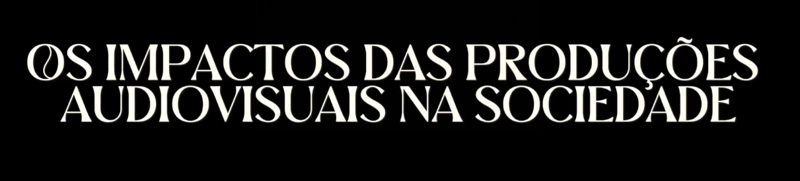
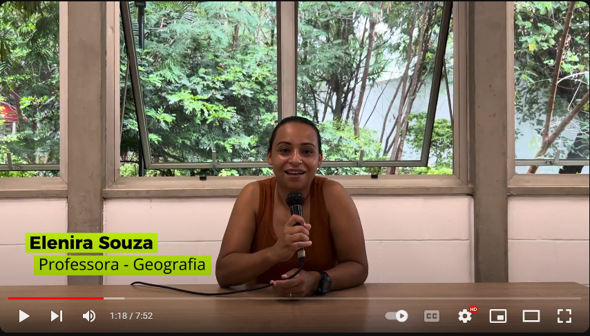
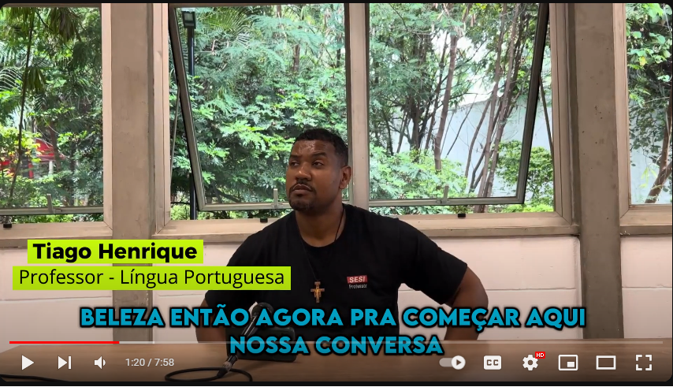

Projetos Pessoais

João Vítor Martinelle
Em 2023, no meu último ano do ensino médio, desenvolvi um projeto intitulado
"Os Impactos
das Produções Audiovisuais na Sociedade"com o objetivo de destacar a importância e o impacto da
música e dos vídeos na vida das pessoas.
Através de entrevistas, foi possível explorar de perto as diversas perspectivas sobre o tema proposto.

A série de entrevistas em estilo documentário possui 3 episódios:
Assista esse episódio aqui

Assista esse episódio aqui

Assista esse episódio aqui

Meu projeto de conclusão de curso no SENAI:
Em dezembro de 2023, finalizei meu curso técnico em mecatrônica com o desenvolvimento de um
projeto de automação industrial. O projeto envolvia uma mesa de distribuição de peças, que utilizava
sensores, válvulas e atuadores pneumáticos, circuitos elétricos e a programação de CLP (Controlador
Lógico Programável) para executar a tarefa de forma
automatizada.
Meu primeiro projeto em UPx na FACENS:
No primeiro semestre de 2024, apresentei meu projeto IoT no Centro Universitário
Facens.
O projeto consiste em um semáforo inteligente capaz de se adaptar ao fluxo de automóveis, melhorando o
trânsito
da cidade de Sorocaba.
Para demonstrar o funcionamento, meu grupo construiu uma maquete (em uma chapa de MDF que foi cortada e
desenhada pela máquina de corte a laser do FAB LAB FACENS)
do cruzamento com os semáforos, adicionando um LED azul nos semáforos convencionais para indicar quando
um carro
era contabilizado, fornecendo uma maior segurança.
O semáforo libera primeiro o lado do cruzamento com mais carros, a fim de evitar
congestionamentos.
Home
Hobbies
Contato